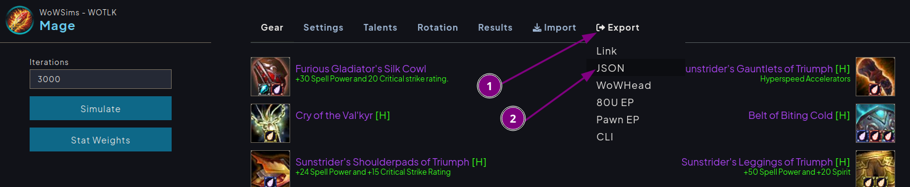

.add commands
Extracts gear from a wowsims .json and creates a set of .add for gear, enchants, gems, and glyphs.
Uses data from WOTLK 335a Spell.dbc and AzerothCore `acore_world.item_template`.

.addpaste commands into macros and run
optional use addon superdupermacro to paste into a 1 single macro https://felbite.com/addon/4135-superdupermacro/
This page uses Pyodide to run a Python script in the browser. No installation is needed.
If there are any issues on this page, feel free to report them by making an issue.
The .py is available as a script, or through jupyter notebook